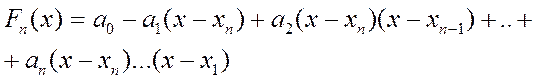
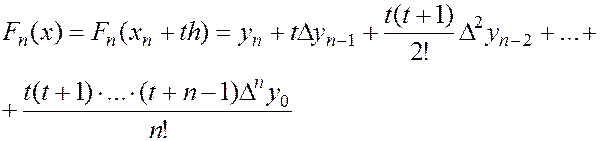

Друга інтерполяційна формула Ньютона
Тоді, коли значення аргументу знаходиться ближче до кінця відрізка інтерполяції, застосовувати першу інтерполяційну формулу незручно. У цьому випадку використовують формулу для інтерполювання назад (другу інтерполяційну формулу Ньютона), яку шукають у вигляді:

Як і для першої інтерполяційної формули Ньютона, коефіцієнти шукають згідно з умовою збіжності значень функції та інтерполяційного многочлена у вузлах інтерполяції. Внаслідок громіздкості виведення, відразу записуємо результуючу формулу із використанням заміни
